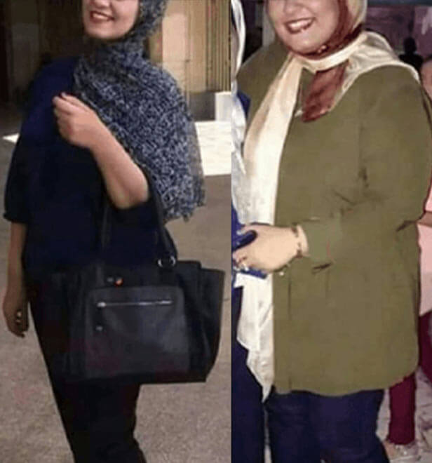

لقد فقدت 130 رطلاً - بدون جوع أو تمارين مرهقة. سأخبرك كيف تحصل على جسم مثالي في شهر واحد فقط
مرحباً يا فتيات :) اسمي نيرمين، أعيش في الرياض. أريد أن أخبركم عن سلاحي السري في مكافحة الوزن الزائد :) ولكن قصة صغيرة أولاً.
ما دمت أتذكر، كنت دائمًا ممتلئًا. في سن 18، كان وزني 270 رطلاً، وأعاني من السمنة وضيق التنفس. لكن أكبر خيبة أمل، حتى كابوس بالنسبة لي، كانت النظرات التي كان الأولاد يعطيني إياها. اعتقدت أن الرجال اللطفاء، في نفس العمر وأكبر قليلاً، سوف ينظرون إلي في أحسن الأحوال إما كصديق أو لا شيء. لكن كان الأمر أسوأ بكثير - لقد أزعجوني وسخروا مني. أولا في المدرسة ثم في الجامعة. لقد وقعت ذات مرة في حب رجل وسيم كان أكبر مني بسنة. لم أستطع مساعدة نفسي وأرسلت له رسالة نصية أولاً على الشبكة الاجتماعية. كان متصلاً بالإنترنت وبدأنا الدردشة. قال إنه معجب بي! كانت مثيرة ورائعة جدا! لكن في اليوم التالي أهانني وسخر مني أمام الجميع.
في ذلك اليوم، أردت الذوبان في الأرض، أو القفز من السطح أو القيام بشيء غبي من هذا القبيل.
نظر إليّ الأولاد باشمئزاز، وظلت والدتي تقول: "اعتني بنفسك. متى ستفقد وزنك؟"
أقاربي والأشخاص من حولي يضغطون علي باستمرار. وحاولت حقًا أن أرتقي إلى مستوى توقعاتهم. في البداية، حاولت اتباع نظام غذائي. لقد بدأت بأبسط شيء بالنسبة لي - حمية الشوكولاتة. يمكنني تناول قطعة كبيرة من الشوكولاتة، لكن أثناء اتباع نظام غذائي، كان علي أن أتناول قطعة صغيرة من الشوكولاتة الداكنة يوميًا لمدة أسبوع كامل. لأكون صادقًا، لقد انهارت بسرعة، ولم أستمر حتى يومين. بدون الفيتامينات والمواد المغذية، رفض جسدي ببساطة أن يعمل. ثم جربت حمية التفاح، الحمية الأحادية، حمية الكربوهيدرات، حمية الشرب، وحتى الصيام العلاجي. كان التأثير ضئيلًا للغاية - سأفقد رطلًا واحدًا فقط، وكان الجوع يجعلني أشعر بالغثيان والدوار، وأصبت بحرقة في المعدة، وألم معدتي بشكل رهيب. عندما أصبح الألم لا يطاق، حاولت أن أتناول شيئًا منخفض السعرات الحرارية لملء الفراغ وتقليل الشعور بالجوع. كان جسدي متوتراً باستمرار بسبب نقص التغذية. بدأت أعاني من مشاكل في الجلد - أصبت ببعض الطفح الجلدي والنتوءات، وبدا يبدو أقبح مما كنت عليه عندما كنت سمينًا! ثم بدأ شعري يتساقط، وأظافري تتكسر، وأسناني تتفتت. من الواضح أنني أعاني من نقص فيتامين. لكن على الرغم من كل جهودي واتباع نظام غذائي صارم، واصلت اكتساب أرطال حمقاء. في هذه الملاحظة المحزنة، قررت التخلي عن الوجبات الغذائية الخطيرة من أجل صحتي. كانت محاولتي التالية لفقدان الوزن هي الذهاب إلى صالة الألعاب الرياضية.
كنت مجهدة جدا بعد زيارتي الأولى إلى صالة الألعاب الرياضية!
اتضح أنه ضغط عقلي لا يصدق بالنسبة لي. اعتقدت أنني سأكون مثل فيل عملاق على جهاز المشي، حيث ينظر إلي الجميع ويشارون ويضحكون. لكنني ما زلت أجبرت نفسي وذهبت إلى صالة الألعاب الرياضية مرة واحدة، حتى أنني عملت مع مدرب. كانت شقراء متغطرسة ونحيفة تبلغ من العمر 20 عامًا وتحدثت باستمرار عن فوائد اتباع نظام غذائي صحي وأنني كنت بحاجة إلى المشي 5 مرات على الأقل في الأسبوع لمدة ساعتين. ثم أخذتني إلى جهاز الجري وجعلتني أركض لمدة 40 دقيقة. عندما انتهيت، كنت على استعداد لإخراج رئتي من السعال. لم يكن جسدي جاهزًا لذلك. لم أتمكن من توظيف مدرب آخر أكثر خبرة - لقد كان مكلفًا، ولم يكن لدي هذا القدر من المال. لذلك، لم تكن صالة الألعاب الرياضية هي أسلوبي في فقدان الوزن. لم أستطع القيام بذلك بمفردي أو في المنزل - كان هناك خطر كبير من أن يتسبب وزني في إصابات أو إجهاد في المفاصل. وقررت أن آكل كما اعتدت أن أمارس الرياضة قليلاً بل وأمشي بمفردي في المساء، على أمل أن يصبح الوزن في يوم من الأيام طبيعيًا من تلقاء نفسه، وتختفي مشاكل الجلد والأظافر والشعر.
لكن حدثت معجزة عندما كنت يأسًا تمامًا!
لقد مر عامان منذ محاولتي الأولى لفقدان الوزن. لم أعد أتمنى شيئًا، وكدت أتقبل فكرة أنني سأعيش في جسد سمين وقبيح لبقية حياتي. توقف والداي عن الحكم علي، وما زال الرجال لا ينظرون إلي على الإطلاق.
مثل العديد من الفتيات، لدي أفضل صديق أشارك معه كل الأسرار: نحن نناقش الأولاد، ونختار الملابس، ونستمتع بالنجاح ونعاني من المصائب معًا. بطبيعة الحال، لم تكن مشكلة الوزن خفية بالنسبة لها. وفي إحدى الليالي اتصلت بي متحمسة:
- مرحبًا نيرمين، استمع، لقد تعرفت على طريقة جديدة لفقدان الوزن ...
- لا أريد حتى أن أعرف! - قاطعتها.
- حمية جديدة؟
- تقريبًا!
- منتج يعزز الحالة الكيتونية في الجسم. في الأساس، يمكن لجسمك الدخول في الحالة الكيتونية في 7-10 أيام دون اتباع نظام غذائي، ولكن مع استخدام هذا المنتج يستغرق حوالي ساعة. لا يوجد الكثير منها، فقط الفيتامينات والمعادن الطبيعية التي تسرع الامتصاص والتمثيل الغذائي وتحويل الدهون إلى طاقة وإزالة المواد من الجسم.
- حسنًا، كيف يمكن أن يساعدني هذا؟ الى جانب ذلك، أنا بالفعل أتناول الفيتامينات.
- الأمر مختلف تمامًا. سيقوم جسمك "بمعالجة" الطعام عدة مرات بشكل أسرع! هل سبق لك أن رأيت فتيات يأكلن مثل الفيلة ولا يصبن بالسمنة؟ هذا لأن لديهم عملية التمثيل الغذائي السريع.
جعلني أفكر. التمثيل الغذائي السريع هو حل رائع لهذه المشكلة. أتساءل كيف يمكن تسريعها؟
- وما هي الفيتامينات التي يحتوي عليها؟ ربما يجب أن أجربها.
- يحتوي على مالتوديكسترين، الذي يسرع من الحالة الكيتونية، والفحم النشط، وخلاصة جوز الهند، والقهوة الطبيعية، و L-carnitine. حارق قوي للدهون: يقلل من شهيتك ؛ لن ترغب في تناول الحلويات أو المخبوزات بعد هذا المشروب. بالإضافة إلى ذلك، تفقد الوزن بشكل أسرع من اتباع نظام كيتو الغذائي المعتاد. لتحقيق الكيتونيه، عليك التخلي عن كل ما يحتوي على الكربوهيدرات: السكر والخبز والخضروات والفاكهة. يحدث استخدام ketosis من تلقاء نفسه. تتم إزالة الدهون بسرعة من الخصر والفخذين.
- اه هذا مشوق. وماذا يسمى؟
- هذا هو مكمل غذائي خاص من . سأرسل لك رابطًا لها.
هذه هي الطريقة التي تم بها حل المشكلة الرئيسية في حياتي من تلقاء نفسها. طلبت على الفور دورة وبدأت رحلتي إلى جسم جميل ونحيل. لكن قبل أن أخبرك عن النتائج، أريد أن أقدم إخلاء مسؤولية. لا أوصيك بأخذ منتجات أي شركة حتى تتشاور مع أخصائي وإجراء اختبار للتأكد من عدم وجود موانع.
اهم الاشياء اولا. لماذا اخترت هذا المنتج؟
قبل كل شيء، إنه آمن. يمكنك مناقشة كل ما يعجبك حول فوائد مكملات إنقاص الوزن. لقد تناولت الكثير منها، ولكن دون جدوى. ولكن على عكس جميع المكملات الكيميائية، يعد مشروبًا عضويًا. المكونات كلها طبيعية: الفحم المنشط وخلاصة جوز الهند والقهوة، المكونات الأخرى مصنوعة من مستخلصات نباتية، لذلك فهي لا تسبب الحساسية وغير ضارة بالصحة.
لا تحتاج أيضًا إلى اتباع نظام غذائي صارم عند تناول . حتى لو كنت تتبع نظامًا غذائيًا كيتو، يمكنك شراء بعض الحلويات والمخبوزات والفواكه والخضروات. يعمل على تسريع عملية التمثيل الغذائي، ولن يرى جسمك ببساطة أي كربوهيدرات إضافية! انها مثالية!
ثالثًا، إنه يساعد حقًا، ويساعد بسرعة! في ثلاثة أسابيع، فقدت 130 رطلاً، دون ضغوط وقيود، سهلة وهادئة. ليس لدي أي آثار جانبية. لقد مرت ستة أشهر منذ أن فقدت وزني، وحافظت على وزني جديد دون زيادة.
للحصول على أفضل النتائج، يوصى بأخذ كدورة لمدة شهر. لقد اختبرت ذلك بنفسي، ويمكنني أن أقول على وجه اليقين أن تناوله بانتظام يساعدني في تحقيق نتائج ممتازة والحفاظ على الوزن. سيكون من الخطيئة عدم الحصول على هذا المنتج بهذا السعر المناسب!
ما الذي تغير منذ ذلك الحين؟
أدركت أن حياتي كانت تتغير بشكل كبير بعد أسبوع من بدء تناول ، عندما كان صديق صديقي يراقبني طوال المساء في إحدى الحفلات. وفي اليوم التالي، طلب مني هذا الصديق الخروج في موعد! حصلت صفحتي على Instagram على تقييمات رائعة وإطراء من الرجال. والكرز فوق - أنا عروس الآن! في السابق، لم أستطع حتى أن أحلم بالجلوس في مطعم مع زوجي المستقبلي، الذي كان سيضع عينيه علي ويتوهج من السعادة. لم أشعر أبدًا بالرغبة الشديدة في حياتي كما أفعل الآن!
يا فتيات، أريد أن أخبركم بهذا. يستحق كل منا أن يكون سعيدًا وجميلًا ومحبوبًا وأن يحب أنفسنا أولاً. كلنا جمال حقيقي ونستحق المزيد! رويت قصتي خاصة لمن يعانون من زيادة الوزن، مثلما فعلت. كما ترى، لقد نجحت! وستنجح بالتأكيد أيضًا! بالمناسبة، قمت بنشر رابط إلى الموقع الرسمي أدناه - قم بتسجيل الدخول، واسأل المستشارين أسئلتك واحصل على جميع المعلومات حول المنتج الجديد لجسم جميل.
واحرص على إخباري وللمشتركين الآخرين بنتائجك وإنجازاتك! مشاركة الصور الخاصة بك والتعليق!
فيفي، نتيجة رائعة! هل عانيت من قبل من مشاكل في الكبد أو المعدة أو الكلى؟
حنان، أبدا! هذا منتج رائع حقًا بدون آثار جانبية. أشعر بشعور رائع!

فيفي، لقد فقدت 136 رطلاً، بالكاد أستطيع تصديق ذلك!
بالتااكيد!

منتج رائع. نتيجة رائعة جدا.